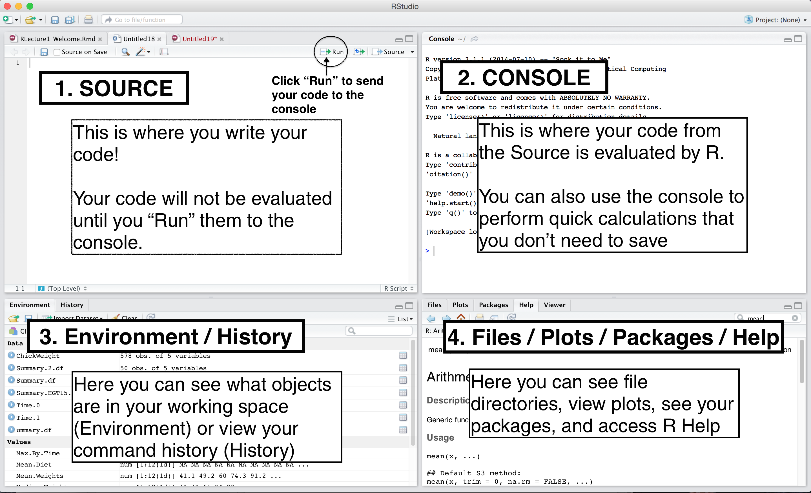

Appendix A — R Basics
R is the name of the programming language we will learn on this course.
RStudio is a convenient interface which we will be using throughout the course in order to learn how to organise data, produce accurate data analyses & data visualisations.
R is a programming language that you will write code in, and RStudio is an Integrated Development Environment (IDE) which makes working with R easier. Think of it as knowing English and using a plain text editor like NotePad to write a book versus using a word processor like Microsoft Word. You could do it, but it wouldn’t look as good and it would be much harder without things like spell-checking and formatting. In a similar way, you can use R without R Studio but we wouldn’t recommend it. The key thing to remember is that although you will do all of your work using RStudio for this course, you are actually using two pieces of software which means that from time-to-time, both of them may have separate updates.
R and RStudio can be downloaded for free onto your personal computers(see Appendices), but for convenience we will use a classroom space on Posit cloud.
Posit cloud is a cloud-based service where we can log into remotely hosted servers that host our data analysis projects.
The advantage of using Posit cloud is that all the extra packages and functions you need for this course will already be installed. You can log-in to your workspace from any computer as long as you have an internet connection and remember you username and password. I can also “visit” your projects and help out when you get stuck, if they are hosted on Posit cloud.
Eventually we will may also add extra tools like GitHub and RMarkdown for data reproducibility, literate and collaborative programming.
By the end of this course I hope you will have the tools to confidently analyze real data, make informative and beautiful data visuals, and be able to analyze lots of different types of data.
A.1 Using Posit cloud
All of our sessions will run on cloud-based software. All you have to do is make a free account, and join our Workspace.
Once you are signed up - you will see that there are two spaces:
Your workspace - for personal use (20hrs/month)
Our shared classroom - educational licence (no limit)
Make sure you are working in the classroom workspace - so that I can distribute project work and ‘visit’ your projects if needed.
Posit cloud works in exactly the same way as RStudio, but means you don’t have to download any software. You can access the hosted cloud server and your projects through any browser connection (Chrome works best), from any computer.
Here is a good reference guide to Posit cloud
A.2 Getting to know RStudio
R Studio has a console that you can try out code in (appearing as the bottom left window), there is a script editor (top left), a window showing functions and objects you have created in the “Environment” tab (top right window in the figure), and a window that shows plots, files packages, and help documentation (bottom right).
You will learn more about how to use the features included in R Studio throughout this course, however, I highly recommend watching RStudio Essentials 1 at some point.
The video lasts ~30 minutes and gives a tour of the main parts of R Studio.
A.2.1 Consoles vs. scripts
The script window is the place to enter and run code so that it is easily edited and saved for future use. Usually the Script Window is shown at the top left in RStudio. If this window is not shown, it will be visible if you open a previously saved R script, or if you create a new R Script. You create new R Script by clicking on File > New File > R Script in the RStudio menu bar.
To execute your code in the R script, you can either highlight the code and click on Run, or you can highlight the code and press CTRL + Enter on your keyboard.
The console: you can enter code directly in the Console Window and click Enter. The commands that you run will be shown in the History Window on the top right of RStudio. Though it is much more difficult to keep track of your work this way.
A.2.2 Environment
The Environment tab (top right) allows you to see what objects are in the workspace. If you create variables or data frames, you have a visual listing of everything in the current workspace. When you start a new project this should be completely empty.
A.2.3 Plots, files, packages, help
Plots - The Plots panel, shows all your plots. There are buttons for opening the plot in a separate window and exporting the plot as a pdf or jpeg (though you can also do this with code.)
Files - The files panel gives you access to the file directory on your hard drive.
Packages - Shows a list of all the R packages installed on your harddrive and indicates whether or not they are currently loaded. Packages that are loaded in the current session are checked while those that are installed but not yet loaded are unchecked. We will discuss packages more later.
Help - Help menu for R functions. You can either type the name of a function in the search window, or use the code to search for a function with the name

A.2.4 Make RStudio your own
You can personalise the RStudio GUI as much as you like.
A.3 Get Help!
There are a lot of sources of information about using R out there. Here are a few helpful places to get help when you have an issue, or just to learn more
The R help system itself - type
help()and put the name of the package or function you are querying inside the bracketsVignettes - type
browseVignettes()into the console and hit Enter, a list of available vignettes for all the packages we have will be displayedCheat Sheets - available at RStudio.com. Most common packages have an associate cheat sheet covering the basics of how to use them. Download/bookmark ones we will use commonly such as ggplot2, data transformation with dplyr, Data tidying with tidyr & Data import.
Google - I use Google constantly, because I continually forget how to do even basic tasks. If I want to remind myself how to round a number, I might type something like R round number - if I am using a particular package I should include that in the search term as well
Ask for help - If you are stuck, getting an error message, can’t think what to do next, then ask someone. It could be me, it could be a classmate. When you do this it is very important that you show the code, include the error message. “This doesn’t work” is not helpful. “Here is my code, this is the data I am using, I want it to do X, and here’s the problem I get.”
It may be daunting to send your code to someone for help.
It is natural and common to feel apprehensive, or to think that your code is really bad. I still feel the same! But we learn when we share our mistakes, and eventually you will find it funny when you look back on your early mistakes, or laugh about the mistakes you still occasionally make!
A.4 R
Go to Posit cloud and enter the Project labelled Day One - this will clone the project and provide you with your own project workspace.
Follow the instructions below to get used to the R command line, and how R works as a language.
A.5 Your first R command
In the RStudio pane, navigate to the console (bottom left) and type or copy the below it should appear at the >
Hit Enter on your keyboard.
- What answer did you get?
The first line shows the request you made to R, the next line is R’s response
You didn’t type the > symbol: that’s just the R command prompt and isn’t part of the actual command.
When a complete expression is entered at the prompt, it is evaluated and the result of the evaluated expression is returned. The result may be auto-printed.
Usually, with interactive work, we do not explicitly print objects with the print function; it is much easier to auto-print them by typing the name of the object and hitting return/enter. However, when writing scripts, functions, or more extended programs, there is sometimes a need to explicitly print objects.
When an R vector is printed, you will notice that an index for the vector is printed in square brackets [] on the side. For example, see this integer sequence
The numbers in the square brackets are not part of the vector itself; they are merely part of the printed output.
Note that the : operator is used to create integer sequences
A.5.1 Operators
There are a few different types of operators to consider in R
A.5.1.1 Assignment Operator
| Operator | Description |
|---|---|
| <- | used to assign values to variables |
A.5.1.2 Arithmetic Operators
| Operator | Description |
|---|---|
| + | addition |
| - | subtraction |
| * | multiplication |
| / | division |
| ^ | exponentiation |
A.5.1.3 Relational Operators
| Operator | Description |
|---|---|
| < | less than |
| <= | less than or equal to |
| > | greater than |
| >= | greater than or equal to |
| == | exactly equal to |
| != | not equal to |
A.5.1.4 Logical Operators
| Operator | Description |
|---|---|
| ! | not |
| & | AND |
| ⎮ | OR |
A.5.1.5 Membership Operators
| Operator | Description |
|---|---|
| %in% | used to check if an element is in a vector or list |
A.5.2 Typos
Before we go on to talk about other types of calculations that we can do with R, there’s a few other things I want to point out. The first thing is that, while R is good software, it’s still software. It’s pretty stupid, and because it’s stupid it can’t handle typos. It takes it on faith that you meant to type exactly what you did type.
Suppose you forget to hit the shift key when trying to type +, and as a result your command ended up being 10 = 20 rather than 10 + 20. Try it for yourself and replicate this error message:
Error in 10 = 20 : invalid (do_set) left-hand side to assignment
What’s going on: R tries to interpret 10 = 20 as a command, but it doesn’t make sense, so it gives you an error message.
When a person sees this, they might realize it’s a typo because the + and = keys are right next to each other on the keyboard. But R doesn’t have that insight, so it just gets confused.
What’s even trickier is that some typos won’t create errors because they accidentally form valid R commands. For example, if I meant to type 10 + 20 but mistakenly pressed a neighboring key, I’d end up with 10 - 20. Now, R can’t read your mind to know you wanted to add, not subtract, so something different happens:
In this case, R produces the right answer, but to the the wrong question.
A.5.3 More simple arithmetic
One of the best ways to get familiar with R is to experiment with it. The good news is that it’s quite hard to mess things up, so don’t stress too much. Just type whatever you like into the console and see what happens.
Now, if your console’s last line looks like this:
> 10+
+ And there’s a blinking cursor next to that plus sign, it means R is patiently waiting for you to complete your command. It believes you’re still typing, so it hasn’t tried to run anything yet. This plus sign is a bit different from the usual prompt (the > symbol). It’s there to nudge you that R is ready to “add” what you’re typing now to what you typed before. For example, type 20 and hit enter, and then R will complete the command like this:
> 10 +
+ 20
[1] 30Alternatively hit the escape key, and R will forget what you were trying to do and return to a blank line.
A.5.4 Try some simple maths
Raise a number to the power of another
Multiplying a number \(x\) by itself \(n\) times is called “raising \(x\) to the \(n\)-th power”. Mathematically, this is written as \(x^n\). Some values of \(n\) have special names: in particular \(x^2\) is called \(x\)-squared, and \(x^3\) is called \(x\)-cubed. So, the 4th power of 5 is calculated like this:
\[5^4 = 5 \times 5 \times 5 \times 5 \]
A.5.5 Perform some combos
R follows the standard order of operations (BODMAS/BIDMAS), which means it first calculates within brackets, then deals with exponents, followed by division and multiplication, and finally addition and subtraction.
Let’s look at two examples to see how the order of operations affects the results:
Similarly if we want to raise a number to a fraction, we need to surround the fraction with parentheses ()
The first one calculates 16 raised to the power of 1, then divided this answer by two. The second one raises 16 to the power of a half. A big difference in the output.
While the cursor is in the console, you can press the up arrow to see all your previous commands.
You can run them again, or edit them. Later on we will look at scripts, as an essential way to re-use, store and edit commands.
A.6 “TRUE or FALSE” data
Time to make a sidebar onto another kind of data. Many concepts in programming rely on the idea of a logical value. A logical value is an assertion about whether something is true or false. This is implemented in R in a pretty straightforward way. There are two logical values, namely TRUE and FALSE. Despite the simplicity, logical values are very useful things. Let’s see how they work.
A.6.1 Assessing mathematical truths
Time to explore a different kind of data. In programming, many concepts rely on logical values. A logical value is a statement about whether something is true or false. In R, this is pretty straightforward. There are two logical values: TRUE and FALSE. Despite their simplicity, these logical values are incredibly useful. Let’s dive into how they work.
In R, basic mathematics is solid, and there’s no room for manipulation. When you ask R to calculate 2 + 2, it always provides the same answer,
up to this point, R has been performing calculations without explicitly asserting whether \(2 + 2 = 4\) is a true statement. If I want R to make an explicit judgment, I can use a command like this:
TRUE
What I’ve done here is use the equality operator, ==, to force R to make a “true or false” judgement.
This is a very different operator to the assignment operator = you saw previously.
A common typo that people make when trying to write logical commands in R (or other languages, since the “= versus ==” distinction is important in most programming languages) is to accidentally type = when you really mean ==.
Okay, let’s see what R thinks of 2 +2 ==5:
Now, let’s see what happens when I attempt to make R believe that two plus two equals five by using an assignment statement like 2 + 2 = 5 or 2 + 2 <- 5. Here’s the outcome:
Error in 2 + 2 = 5 : target of assignment expands to non-language objectIndeed, R isn’t too fond of this idea. It quickly realizes that 2 + 2 is not a variable (that’s what the “non-language object” part is saying), and it refuses to let you “reassign” it. While R can be quite flexible and allows you to do some remarkable things to redefine parts of itself, there are fundamental truths it simply won’t budge on. It won’t tamper with the laws of addition, and it won’t redefine the number 2.
That’s probably for the best.
A.7 Storing outputs
When dealing with more complex questions, it’s often helpful to store our answers and use them in later steps. Fortunately, this is quite easy to do in R. We can assign the results to a name with the assignment operator:
This literally means please assign the value of 1+2 to the name a. We use the assignment operator <- to make this assignment.
Note the shortcut key for <- is Alt + - (Windows) or Option + - (Mac)
By performing this action, you’ll achieve two things:
You will notice in the top right-hand pane within the Environment tab that there is now an object labeled a with a value of 3.
You can check what the variable a contains by typing it into your Console and pressing Enter.
Keep in mind that you won’t see the result of your operations until you type the object into the R console and press Enter.
You can now call this object at any time during your R session and perform calculations with it.
What happens if we assign a value to a named object that already exists in our R environment??? for example
The value of a is now 10.
You should see that the previous assignment is lost, gone forever and has been replaced by the new value.
We can assign lots of things to objects, and use them in calculations to build more objects.
Remember: If you now change the value of b, the value of c does not change.
Objects are totally independent from each other once they are made.
Overwriting objects with new values means the old value is lost.
- What is the value of
c?
[1] 15
When c was created it was a product of a and b having values of 10 and 15 respectively. If we re-ran the command c <- a + b after changing the value of b then we would get a value of 17.
Look at the environment tab again - you should see it’s starting to fill up now!
RStudio will by default save the objects in its memory when you close a session.
These will then be there the next time you logon. It might seem nice to be able to close things down and pick up where you left off, but its actually quite dangerous. It’s messy, and can cause lots of problems when we work with scripts later, so don’t do this!
To stop RStudio from saving objects by default go to Tools > Project Options option and change “Save workspace to .RData on exit” to “No” or “Never”.
Instead we are going to learn how to use scripts to quickly re-run analyses we have been working on.
A.7.1 Choosing names
Use informative variable names. As a general rule, using meaningful names like
orangeandappleis preferred over arbitrary ones likevariable1andvariable2. Otherwise it’s very hard to remember what the contents of different variables actually are.Use short variable names. Typing is a pain and no-one likes doing it. So we much prefer to use a name like
appleover a name likepink_lady_apple.Use one of the conventional naming styles for multi-word variable names. R only lets you use certain things as legal names. Legal names must start with a letter not a number, which can then be followed by a sequence of letters, numbers, ., or _. R does not like using spaces. Upper and lower case names are allowed, but R is case sensitive so
Appleandappleare different.My favourite naming convention is
snake_caseshort, lower case only, spaces between words are separated with a _. It’s easy to read and easy to remember.
A.8 R objects
In R, there are five fundamental or “atomic” classes of objects:
Character: These represent text or character strings.
Numeric (num) or Double (dbl): These are used for real numbers (e.g., decimal numbers).
Integer: Used for whole numbers.
Complex: For complex numbers.
Logical: Represented as True or False, these are used for logical values.
The most basic type of R object is a vector. You can create empty vectors using the vector() function. The primary rule regarding vectors in R is that a vector can only contain objects of the same class.
However, as with any good rule, there’s an exception, which is the “list.” Lists are represented as vectors but can hold objects of different classes, which is why they’re often used.
A.8.1 Numbers
In R, both “dbl” and “num” refer to numeric data types, but there is a subtle difference between them:
dbl (“double”): This refers to double-precision floating-point numbers, which are capable of storing real numbers with high precision. Double-precision numbers have more decimal places of accuracy and can represent a wider range of values without loss of precision. When you perform arithmetic operations, R typically returns results as “dbl” values by default.
num (“numeric”): “Num” is a more general term that includes not only double-precision floating-point numbers but also integer values. In R, integers are a subtype of numeric data. Numeric data can include both integers and double-precision floating-point numbers, depending on the specific data and how it is represented.
So, “dbl” specifically denotes double-precision floating-point numbers, while “num” encompasses a broader range of numeric data, including both integers and double-precision numbers. In most cases, you can use “num” to work with numeric data in a more general sense, while “dbl” focuses on the higher-precision representation of real numbers.
A.9 Attributes
R objects can come with attributes, which are essentially metadata for the object. These metadata are handy because they help describe the object. For instance, in a data frame, column names serve as attributes, clarifying the data contained in each column. Here are a few examples of R object attributes:
names()anddimnames()dimensions (e.g., for matrices and arrays)
dim()class()(e.g., integer, numeric)Other user-defined attributes or metadata
You can access the attributes of an object, if it has any, by using the attributes() function. If an R object doesn’t have any attributes, the attributes() function will return NULL.
A.10 Vectors
We have been working with R objects containing a single element of data (the technical term is scalar), but we will more commonly work with vectors. A vector is a sequence of elements, all of the same data type. These could be logical, numerical, character etc.
A.10.1 Coercion
In R, when different classes of objects are mixed together in a vector, coercion occurs to ensure that every element in the vector belongs to the same class. Coercion is the process of converting objects to a common class to make the combination reasonable. Let’s see the effects of implicit coercion in the provided examples:
y <- c(2.3, "a") # Here, we're mixing a numeric value (1.7) with a character value ("a"). To make them compatible, R coerces both elements into character values. So, y becomes a character vector.
y <- c(TRUE, 2) # In this case, we're combining a logical value (TRUE) with a numeric value (2). R coerces the logical value into 1, so y becomes a numeric vector.
y <- c("a", TRUE) # We're mixing a character value ("a") with a logical value (TRUE). In this scenario, R coerces the logical value into a character value, resulting in y becoming a character vector.So, the outcome depends on how R can reasonably represent all the objects in the vector. It aims to create a vector of the most inclusive class to accommodate the mixed objects. Keep in mind that this coercion can lead to unexpected results, so it’s essential to be aware of the implicit type conversion when mixing different data types in R.
Objects can also be explicitly coerced from one class to another using the as.* functions, if available.
A.10.2 Task
Create the following vector and check its class, then note what happens when you attempt to coerce to numeric, logical and character
[1] 0 1 2 3 4 5
[1] FALSE TRUE TRUE TRUE TRUE TRUE
[1] "0" "1" "2" "3" "4" "5"r unhide()
Sometimes, R can’t figure out how to coerce an object and this can result in NAs being produced
A.10.3 Subsetting vectors
With numerical indexing, you enter a vector of integers corresponding to the values in the vector you want to access in the form a[index], where a is the vector, and index is a vector of index values. For example, let’s use numerical indexing to get values from our character_vector
We can also use logical indexing
A.10.4 Operations on vectors
We can run the same basic operations on vectors as we did on scalars
A very super-wickedly, important, concept: R likes to operate on vectors of the same length, so if it encounters two vectors of different lengths in a binary operation, it merely replicates (recycles) the smaller vector until it is the same length as the longest vector, then it does the operation.
[1] 1 4 3
Warning: longer object length is not a multiple of shorter object length[1] 1 4 3
A.11 Matrices
Matrices can be thought of as vectors with an added dimension attribute. This dimension attribute is a two-element integer vector specifying the number of rows and columns, which defines the shape and structure of the matrix.
Data frames are also two-dimensional but can store columns of different data types - matrices are simpler as they consist of elements of the same data type.
Matrices are constructed “columns-first” so entries start in the “upper left” and and run down columns.
We can create matrices in several ways:
You will see how in this last operation column names were added to the matrix, we can add, change or remove column and rownames on a matrix with colnames() and rownames()
A.12 Lists
Lists are a versatile and fundamental data type in R. They set themselves apart from regular vectors by allowing you to store elements of different classes within the same list. This flexibility is what makes lists so powerful for various data structures and data manipulation tasks.
You can create lists explicitly using the list() function, which can take an arbitrary number of arguments. Lists, when combined with functions like the “apply” family, enable you to perform complex and versatile data manipulations and analyses in R. Lists are often used to represent heterogeneous data structures, such as datasets where different columns can have different data types and structures.
We can also create empty lists of set lengths with the vector() function, this can be useful for preallocating memory for iterations - as we will see later
Lists can also have names
A.13 Dataframes
Data frames are essential for storing tabular data in R and find extensive use in various statistical modeling and data analysis applications. They offer a structured way to manage and work with data in R, and packages like dplyr, developed by Hadley Wickham, provide optimized functions for efficient data manipulation with data frames.
Here are some key characteristics and advantages of data frames:
Tabular Structure: Data frames are a type of list, where each element in the list represents a column. The number of rows in each column is the same, and this tabular structure makes them suitable for working with datasets.
Mixed Data Types: Unlike matrices, data frames can contain columns with different classes of objects. This flexibility allows you to handle real-world datasets that often include variables of different data types.
Column and Row Names: Data frames include column names, which describe the variables or predictors. Additionally, they have a special attribute called “row.names” that provides information about each row in the data frame.
Creation and Conversion: Data frames can be created in various ways, such as reading data from files using functions like read.table() and read.csv(). You can also create data frames explicitly with data.frame().
Working with Data: Data frames are especially useful when working with datasets that require data cleaning, transformation, or merging. They provide a high level of data organization, and many R packages are designed to work seamlessly with data frames.
dplyr: The
dplyrpackage is optimized for efficient data manipulation with data frames. It offers a set of functions to perform data operations quickly and intuitively.
Data frames are a fundamental structure for managing tabular data in R. They excel in handling datasets with mixed data types and are essential for various data analysis and modeling tasks.
To create a dataframe from vectors we use the data.frame() function
There is one key argument to data.frame() and similar functions called stringsAsFactors. By default, the data.frame() function will automatically convert any string columns to a specific type of object called a factor in R. A factor is a nominal variable that has a well-specified possible set of values that it can take on. For example, one can create a factor sex that can only take on the values “male” and “female”.
Since R ver 4.0 release, stringsAsFactors is set FALSE by default!
However, as I’m sure you’ll discover, having R automatically convert your string data to factors can lead to lots of strange results. For example: if you have a factor of sex data, but then you want to add a new value called other, R will yell at you and return an error. I hate, hate, HATE when this happens. While there are very, very rare cases when I find factors useful, I almost always don’t want or need them. For this reason, I avoid them at all costs.
To tell R to not convert your string columns to factors, you need to include the argument stringsAsFactors = FALSE when using functions such as data.frame()
'data.frame': 5 obs. of 3 variables:
$ index: num 1 2 3 4 5
$ sex : chr "m" "m" "m" "f" ...
$ age : num 99 46 23 54 23To access a specific column in a dataframe by name, you use the $ operator in the form df$name where df is the name of the dataframe, and name is the name of the column you are interested in. This operation will then return the column you want as a vector.
Because the $ operator returns a vector, you can easily calculate descriptive statistics on columns of a dataframe by applying your favorite vector function (like mean()).
We can also use the $ to add new vectors to a dataframe
| index | sex | age | follow_up |
|---|---|---|---|
| 1 | m | 99 | TRUE |
| 2 | m | 46 | FALSE |
| 3 | m | 23 | TRUE |
| 4 | f | 54 | FALSE |
| 5 | f | 23 | FALSE |
Changing column names is easy with a combination of names() and indexing
| ID | sex | age | follow_up |
|---|---|---|---|
| 1 | m | 99 | TRUE |
| 2 | m | 46 | FALSE |
| 3 | m | 23 | TRUE |
| 4 | f | 54 | FALSE |
| 5 | f | 23 | FALSE |
A.13.1 Slice dataframes
Matrices and dataframes can be sliced with [,]
# Return row 1
df[1, ]
# Return column 5 as vector
df[, 5]
# Return column as data.frame
df[5]
# Rows 1:5 and column 2
df[1:5, 2]
# Single element
df[[1,2]]
Or slice with subset
A.13.2 Tibbles
“Tibbles” are a new modern data frame. It keeps many important features of the original data frame
A tibble never changes the input type.
A tibble can have columns that are lists.
-
A tibble can have non-standard variable names.
- can start with a number or contain spaces. -to use this refer to these in a backtick.
Tibbles only print the first 10 rows and all the columns that fit on a screen. - Each column displays its data type
The way we make tibbles is very similar to making dataframes
A.13.3 Brackets with tibbles
The behaviour of single [] indexing with tibbles is slightly different.
In a dataframe [,1] extracts a single column as a vector, but with a tibble this conversion does not occur. Instead it returns as a tibble with a single column, not a vector.
To extract a vector we must use:
https://tibble.tidyverse.org/
https://cran.r-project.org/web/packages/tibble/vignettes/tibble.html
A.14 Matrix, dataframe, tibble functions
Important functions for understanding matrices and dataframes.
| Function | Description |
|---|---|
head(x), tail(x) |
Print the first few rows (or last few rows). |
View(x) |
Open the entire object in a new window. |
nrow(x), ncol(x), dim(x) |
Count the number of rows and columns. |
rownames(), colnames(), names() |
Show the row (or column) names. |
str(x), summary(x) |
Show the structure of the dataframe (i.e., dimensions and classes) and summary statistics. |
A.15 Functions
Functions are the tools of R. Each one helps us to do a different task.
Take for example the function that we use to round a number to a certain number of digits - this function is called round
Here’s an example:
We start the command with the function name round. The name is followed by parentheses (). Within these we place the arguments for the function, each of which is separated by a comma.
The arguments:
x =2.4326782647 (the number we would like to round)digits =2 (the number of decimal places we would like to round to)
Arguments are the inputs we give to a function. These arguments are in the form name = value the name specifies the argument, and the value is what we are providing to define the input. That is the first argument x is the number we would like to round, it has a value of 2.4326782647. The second argument digits is how we would like the number to be rounded and we specify 2. There is no limit to how many arguments a function could have.
Copy and paste the following code into the console.
The help documentation for round()should appear in the bottom right help panel. In the usage section, we see that round()takes the following form:
In the arguments section, there are explanations for each of the arguments. xis the number or vector where we wish to round values. digits is the number of decimal places to be used. In the description we can see that if no value is supplied for digits it will default to 0 or whole number rounding.
Read the ‘Details’ section to find out what happens when rounding when the last digit is a 5.
Let’s try an example and just change the required argument digits
Copy and paste the following code into the console.
Now we can change the additional arguments to produce a different set of numbers.
This time R has still rounded the number, but it has done so to a set number of ‘decimal places’.
Always remember to use the help documentation to help you understand what arguments a function requires.
A.15.1 Storing the output of functions
What if we need the answer from a function in a later calculation. The answer is to use the assignment operator again <-.
In this example we assign values to two R objects that we can then call inside our R function as though we were putting numbers in directly.
Copy and paste the following code into the console.
What value is assigned to the R object rounded_number ?
[1] 2.433
A.15.2 More fun with functions
Copy and paste this:
Looks like we don’t even have to give the names of arguments for a function to still work. This works because the function round expects us to give the number value first, and the argument for rounding digits second. But this assumes we know the expected ordering within a function, this might be the case for functions we use a lot. If you give arguments their proper names then you can actually introduce them in any order you want.
Try this:
But this gives a different answer
Remember naming arguments overrides the position defaults
How do we know the argument orders and defaults? Well we get to know how a lot of functions work through practice, but we can also use help() .
A.16 Packages
When you install R you will have access to a range of functions including options for data wrangling and statistical analysis. The functions that are included in the default installation are typically referred to as Base R and there is a useful cheat sheet that shows many Base R functions here
However, the power of R is that it is extendable and open source - anyone can create a new package that extends the functions of R.
An R package is a container for various things including functions and data. These make it easy to do very complicated protocols by using custom-built functions. Later we will see how we can write our own simple functions. Packages are a lot like new apps extending the functionality of what your phone can do.
A.16.1 Loading packages
To use the functions from a package in our script they must be loaded before we call on the functions or data they contain. So the most sensible place to put library calls for packages is at the very top of our script.
A.16.2 Calling Functions from Packages
After loading a package, you can call its functions using either function() or the full package_name::function_name() syntax. This allows you to specify the package explicitly when using a particular function.
Calling a function explicitly via its package can be useful for
- Avoiding Conflicts:
Sometimes, multiple packages may have functions with the same name. By explicitly specifying the package with package_name::, you avoid naming conflicts and ensure that R uses the function from the intended package.
- Clarity:
It can make your code more transparent and easier to understand, especially in cases where the function’s origin is not immediately obvious. This is helpful for both yourself and others who read your code.
Though it is still good practice to comment at the top of your script that this package is required even if you don’t include library(package)
- Debugging:
When troubleshooting issues or debugging code, specifying the package source of a function can help pinpoint problems and ensure that the correct function is being used.
A.17 Error
Things will go wrong eventually, they always do…
R is very pedantic, even the smallest typo can result in failure and typos are impossilbe to avoid. So we will make mistakes. One type of mistake we will make is an error. The code fails to run. The most common causes for an error are:
typos
missing commas
missing brackets
There’s nothing wrong with making lots of errors. The trick is not to panic or get frustrated, but to read the error message and our script carefully and start to debug (more on this later)…
… and sometimes we need to walk away and come back later!
Try typing the command help() into the R console, it should open a new tab on the bottom right.
Put a function or package into the brackets to get help with a specific topic
To load packages we use the function library(). Typically you would start any analysis script by loading all of the packages you need.
The tidyverse is an opinionated collection of R packages designed for data science. All packages share an underlying design philosophy, grammar, and data structures. This means the functions across the tidyverse are all designed to work together and make the process of data science easier.
A.18 Using packages
Run the below code to load the tidyverse package. You can do this regardless of whether you are using your own computer or the cloud.
You will get what looks like an error message - it’s not. It’s just R telling you what it’s done. You should read this it gives you a full list of the packages it has made available to you.
Now that we’ve loaded the tidyverse package we can use any of the functions it contains but remember, you need to run the library() function every time you start R.
In order to use a package, you must first install it. The following code installs the package tidyverse, a package we will use very frequently.
If you are working on your own computer, use the below code to install the tidyverse.
You only need to install a package once, however, each time you start R you need to load the packages you want to use, in a similar way that you need to install an app on your phone once, but you need to open it every time you want to use it.
If you get an error message that says something like “WARNING: Rtools is required to build R packages” you may need to download and install an extra bit of software called Rtools.
A.19 Package updates
In addition to updates to R and R Studio, the creators of packages also sometimes update their code. This can be to add functions to a package, or it can be to fix errors. One thing to avoid is unintentionally updating an installed package. When you run install.packages() it will always install the latest version of the package and it will overwrite any older versions you may have installed. Sometimes this isn’t a problem, however, sometimes you will find that the update means your code no longer works as the package has changed substantially. It is possible to revert back to an older version of a package but try to avoid this anyway.
To avoid accidentally overwriting a package with a later version, you should never include install.packages() in your analysis scripts in case you, or someone else runs the code by mistake. Remember, the server will already have all of the packages you need for this course so you only need to install packages if you are using your own machine.
A.20 Package conflicts
There are thousands of different R packages with even more functions. Unfortunately, sometimes different packages have the same function names. For example, the packages dplyr and MASS both have a function named select(). If you load both of these packages, R will produce a warning telling you that there is a conflict.
Attaching package: 'MASS'The following object is masked _by_ '.GlobalEnv':
surveyThe following object is masked from 'package:dplyr':
selectpackage �dplyr� was built under R version 3.6.3
Attaching package: �dplyr�
The following objects are masked from �package:stats�:
filter, lag
The following objects are masked from �package:base�:
intersect, setdiff, setequal, union
Attaching package: �MASS�
The following object is masked from �package:dplyr�:
selectIn this case, R is telling you that the function select() in the dplyr package is being hidden (or ‘masked’) by another function with the same name. If you were to try and use select(), R would use the function from the package that was loaded most recently - in this case it would use the function from MASS.
If you want to specify which package you want to use for a particular function you can use code in the format package::function, for example:
Why do we get naming conflicts?
This is because R is open source software. Anyone can write and submit useful R packages. As a result it is impossible to make sure that there are NEVER any functions with identical names.
A.21 Objects
A large part of your coding will involve creating and manipulating objects. Objects contain stuff, and we made our first R objects in the previous chapter. The values contained in an object can be numbers, words, or the result of operations and analyses.You assign content to an object using <-.
A.21.1 Activity 1: Create some objects
Copy and paste the following code into the console, change the code so that it uses your own name and age and run it. You should see that name, age, today, new_year, and data appear in the environment pane.
What command should we use if you need help to understand the function rnorm()?
`

Note that in these examples, name,age, and new_year would always contain the values emily, 35, and the date of New Year’s Day 2021, however, today will draw the date from the operating system and data will be a randomly generated set of data so the values of these objects will not be static.
As a side note, if you ever have to teach programming and statistics, don’t use your age as an example because every time you have to update your teaching materials you get a reminder of the fragility of existence and your advancing age. 2021 update: I have now given up updating my age, I will remain forever 35.
Importantly, objects can be involved in calculations and can interact with each other. For example:
Finally, you can store the result of these operations in a new object:
You may find it helpful to read <- as contains, e.g., name contains the text emily.
You will constantly be creating objects throughout this course and you will learn more about them and how they behave as we go along, however, for now it is enough to understand that they are a way of saving values, that these values can be numbers, text, or the result of operations, and that they can be used in further operations to create new variables.
You may also see objects referred to as ‘variables’. There is a difference between the two in programming terms, however, they are used synonymously very frequently.
A.22 Vectors
We have been working with R objects containing a single element of data, but we will more commonly work with vectors. A vector is a sequence of elements, all of the same data type. These could be logical, numerical, character etc.
The function c lets you ‘concatenate’ or link each of these separate elements together into a single vector.
A.23 Dataframes and tibbles
No we have looked at R objects that contain:
single elements of data
multiple elements of the same data type - vectors
But most often when we import data into R it is put into an object called a tibble which is a type of dataframe.
A dataframe is data structure that organises data into a table. Dataframes can have a mix of different types of data in them. Each column in a dataframe is a different vector, and each row is a different element within the vectors.
Let’s have a quick go at making our own tibble from scratch.
Use str() on an object or vector to find out important information, like the data type of each vector and how many elements it contains.
Now we put these vectors together, where they become the variables in a new tibble using the function tibble()
# A tibble: 4 x 3
person hobby awesomeness
<chr> <chr> <dbl>
1 Mark kickboxing 1
2 Phil coding 100
3 Becky dog walking 1
4 Tony car boot sales 1Have a go at messing about with your script and figure out what each of the functions below does.
A.24 Organising data in wide and long formats
There are two main conventions for dataframes in R, these are wide and long formats.
A wide data format does not repeat values in the first column, data relating to the same “measured thing” are found in different columns
A long data format is where we have a different column for each type of thing we have measures in our data. Each variable has a unique column.

While neither wide or long data is more correct than the other, we will work with long data as it is clearer how many distinct types of variables there are in our data and the tools we will be using from the tidyverse are designed to work with long data.
A.25 How to cite R and RStudio
You may be some way off writing a scientific report where you have to cite and reference R, however, when the time comes it is important to do so to the people who built it (most of them for free!) credit. You should provide separate citations for R, RStudio, and the packages you use.
To get the citation for the version of R you are using, simply run the citation() function which will always provide you with he most recent citation.
To cite R in publications use:
R Core Team (2024). _R: A Language and Environment for Statistical
Computing_. R Foundation for Statistical Computing, Vienna, Austria.
<https://www.R-project.org/>.
A BibTeX entry for LaTeX users is
@Manual{,
title = {R: A Language and Environment for Statistical Computing},
author = {{R Core Team}},
organization = {R Foundation for Statistical Computing},
address = {Vienna, Austria},
year = {2024},
url = {https://www.R-project.org/},
}
We have invested a lot of time and effort in creating R, please cite it
when using it for data analysis. See also 'citation("pkgname")' for
citing R packages.To generate the citation for any packages you are using, you can also use the citation() function with the name of the package you wish to cite.
To cite package 'tidyverse' in publications use:
Wickham H, Averick M, Bryan J, Chang W, McGowan LD, François R,
Grolemund G, Hayes A, Henry L, Hester J, Kuhn M, Pedersen TL, Miller
E, Bache SM, Müller K, Ooms J, Robinson D, Seidel DP, Spinu V,
Takahashi K, Vaughan D, Wilke C, Woo K, Yutani H (2019). "Welcome to
the tidyverse." _Journal of Open Source Software_, *4*(43), 1686.
doi:10.21105/joss.01686 <https://doi.org/10.21105/joss.01686>.
A BibTeX entry for LaTeX users is
@Article{,
title = {Welcome to the {tidyverse}},
author = {Hadley Wickham and Mara Averick and Jennifer Bryan and Winston Chang and Lucy D'Agostino McGowan and Romain François and Garrett Grolemund and Alex Hayes and Lionel Henry and Jim Hester and Max Kuhn and Thomas Lin Pedersen and Evan Miller and Stephan Milton Bache and Kirill Müller and Jeroen Ooms and David Robinson and Dana Paige Seidel and Vitalie Spinu and Kohske Takahashi and Davis Vaughan and Claus Wilke and Kara Woo and Hiroaki Yutani},
year = {2019},
journal = {Journal of Open Source Software},
volume = {4},
number = {43},
pages = {1686},
doi = {10.21105/joss.01686},
}To generate the citation for the version of RStudio you are using, you can use the RStudio.Version() function:
Finally, here’s an example of how that might look in the write-up of your method section:
Analysis was conducted using R ver 4.0.0 (R Core Team, 2020), RStudio (Rstudio Team, 2020), and the tidyverse range of packages (Wickham, 2017).
As noted, you may not have to do this for a while, but come back to this when you do as it’s important to give the open-source community credit for their work.
A.26 Help and additional resources

Getting good at programming really means getting good trying stuff out, searching for help online, and finding examples of code to copy. If you are having difficulty with any of the exercises contained in this book then you can ask for help on Teams, however, learning to problem-solve effectively is a key skill that you need to develop throughout this course.
Use the help documentation. If you’re struggling to understand how a function works, remember the
?functionandhelp()command.If you get an error message, copy and paste it in to Google - it’s very likely someone else has had the same problem.
If you are struggling to produce a particular output or process - try organising your google searches to include key terms such as “in R” or “tidyverse”. - e.g. “how to change character strings into NA values with tidyverse”
The official Cheatsheets are a great resource to keep bookmarked.
Remember to ask for help
-
In addition to these course materials there are a number of excellent resources for learning R:
- StackOverflow
- R for Data Science
- Search or use the #rstats hashtag on Twitter
A.27 Debugging tips
A large part of coding is trying to figure why your code doesn’t work and this is true whether you are a novice or an expert. As you progress through this course you should keep a record of mistakes you make and how you fixed them. In each chapter we will provide a number of common mistakes to look out for but you will undoubtedly make (and fix!) new mistakes yourself.
A.27.1 Prevent errors
Read console outputs as you go
Check that functions are producing the output you expect
Build complex code in simple stages
A.27.2 Fix errors
Have you loaded the correct packages for the functions you are trying to use? One very common mistake is to write the code to load the package, e.g.,
library(tidyverse)but then forget to run it.Have you made a typo? Remember
datais not the same asDATAandt.testis not the same ast_test.Is there a package conflict? Have you tried specifying the package and function with
package::function?Is it definitely an error? Not all red text in R means an error - sometimes it is just giving you a message with information.
A.28 Activity 7: Test yourself
Question 1. Why should you never include the code install.packages() in your analysis scripts?
Remember, when you run install.packages() it will always install the latest version of the package and it will overwrite any older versions of the package you may have installed.
Question 2. What will the following code produce?
Question 3. If you have two packages that have functions with the same name and you want to specify exactly which package to use, what code would you use?
You should use the form package::function, for example dplyr::select. Remember that when you first load your packages R will warn you if any functions have the same name - remember to look out for this!
Question 4. Which of the following is most likely to be an argument?
Question 5. An easy way to spot functions is to look for .
Question 6. The job of <- is to send the output from the function to a/an .
Question 7. A vector must always contain elements of the same data type (e.g logical, character, numeric) .
Question 8. A dataframe/tibble must always contain elements of the same data t